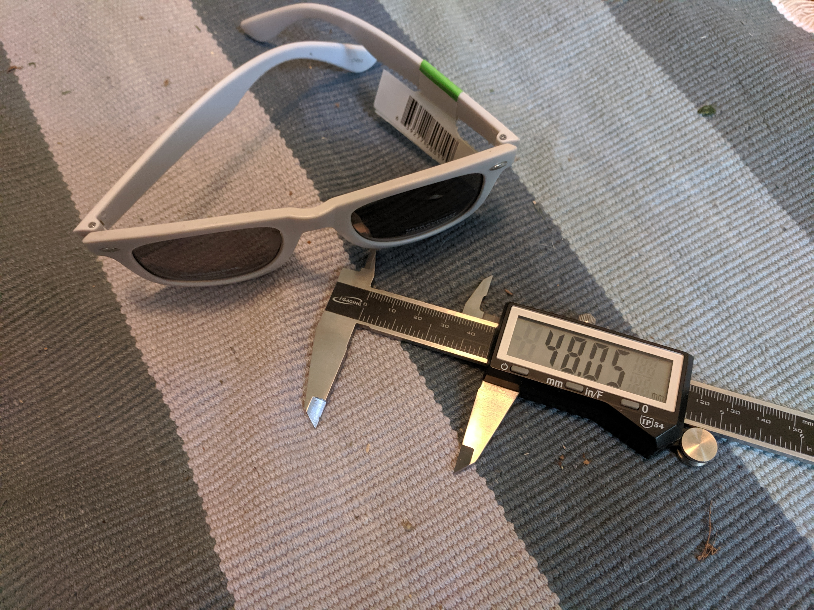
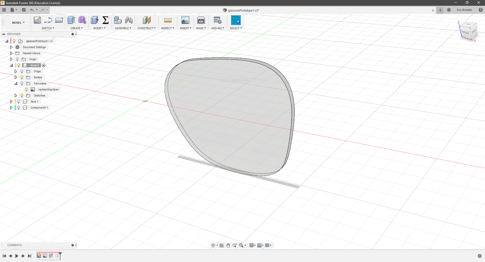
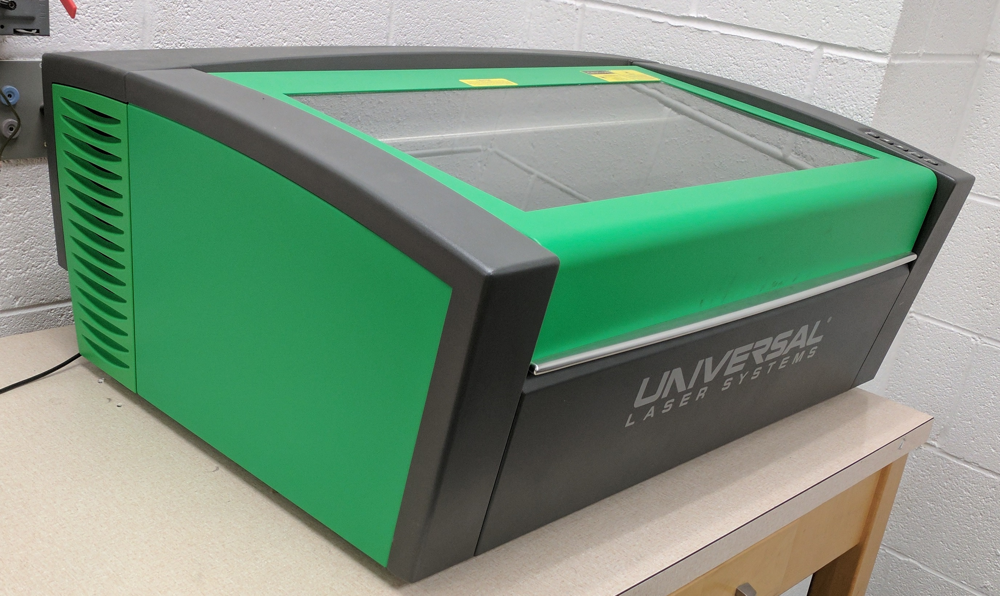
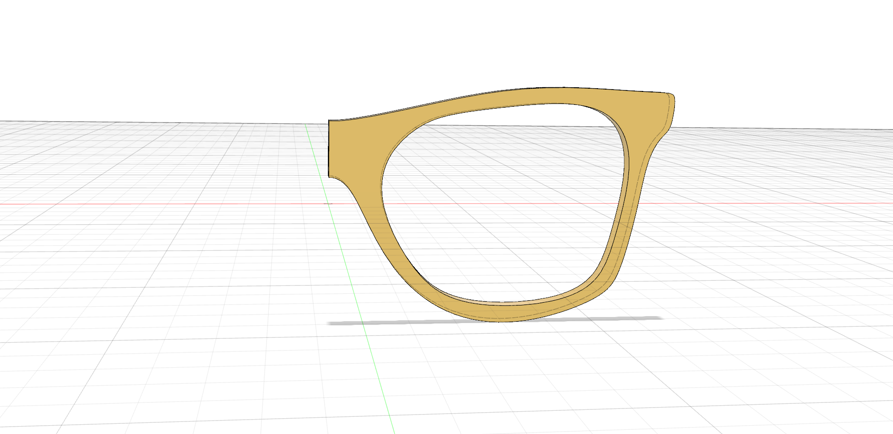
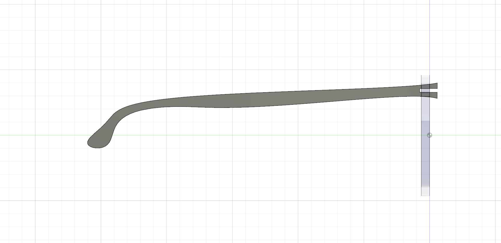
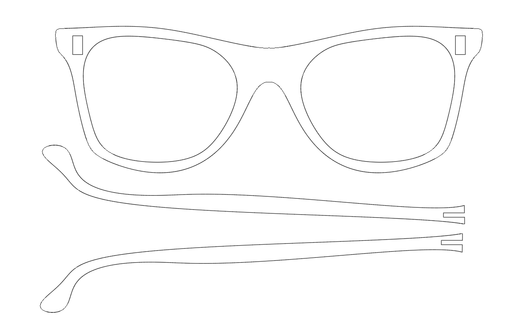
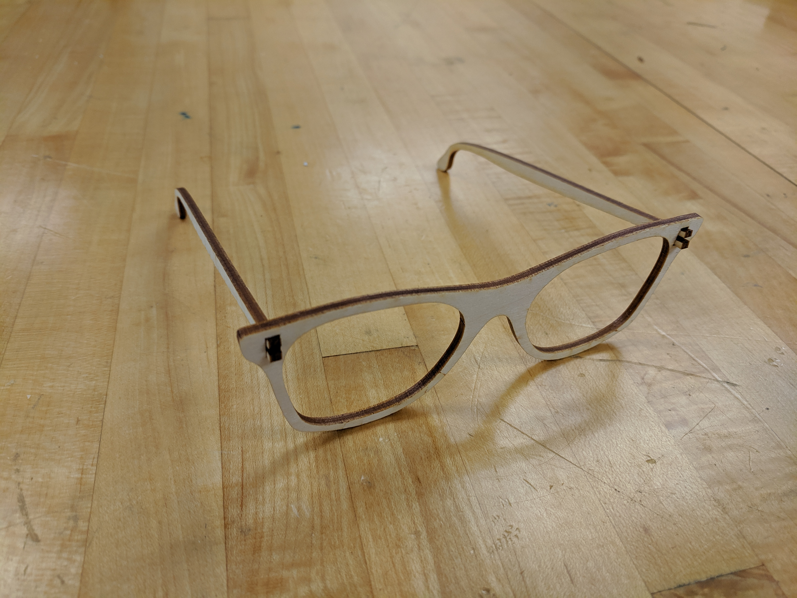

During this week, you will design a pair of sunglasses using computer-aided drawing (CAD) software, the laser cutter, digital calipers, and your creativity!
Using wood, an inexpensive medium you will iterate a design for your sunglasses to meet certain needs, fitting a given lens and matching a person's features.
The goal of this project is not only to design sunglasses to your liking making a functional product from start to finish, but learn tools that build foundational experiences in design and prototyping.
Before we get started in designing our glasses, let's look at the tools involved. We will be utilizing a digital caliper for measurement, CAD for precise drawing and the laser cutter to quickly make a phsyical object.

We are going to be using a program called Autodesk Fusion 360, which is free for students and supplied on these laptops. You will need to create an account using the link below. From here we will import and trace the photo of our lens.

A digital caliper is an indispensible tool for getting precise and accurate measurements on physical objects. We will use them to measure our lenses and check the for the overall sizing of our sunglasses. Glasses lenses are measure from the furthest points horizontally and vertically. Determine your lens size by measure the lens and take a picture of your lens on a white background without shadows.

We will be prototyping with some 3mm thick birch plywood and the Universal VLS 3.50 Laser Cutter. We will have a short demo of the laser cutter and how it works and its safety precautions.
For tomorrow, make sure that you have your documentation setup, you have sketches and measurements for your sunglasses, and you have imported a clean picture of your lens into Fusion 360!
We will now be utilizing CAD to design our glasses from the measurements, photos, and sketches that we developed last class. As you work through this project, make sure to take notes on your progress as it will become part of your documentation. We will start with the design portion of the project and move into the physical prototyping.

Look at the below videos on how to develop your frame. If you follow the suggestions and demos in class, you should have a unique frame that matches the measurements of your sketches from last class!

We will now build the sides at a 90 degree angle and fix them to the front of the frame. Here we can create one piece that aligns with our head measurements and the guide while fitting our front frame.

Lastly, we will setup our part to be exported and cut on the laser cutter! Remember that the material beign used is 3mm thick birch plywood.
Throughout this project you should be documenting your ideas, research, processes and tool settings, and thoughts as you are making your sunglasses. At this point you should have cut one pair of sunglasses and tested the fit of your lenses. Tomorrow we will reflect, make any adjustments, sand, finish, and bend the glasses!
The last portion of this project is finshing the parts by sanding, adding oil or paint, and bending if you wish. This is also a good time to check up on your documentation pieces and see if everything is in order.

Once you have cut your parts on the laser cutter, make sure the lenses are snug. If you like the fit you can lightly sand with 220-grit sandpaper, use some oil for finish, and glue any necessary parts. I fou are interested in bending, do that before any of these steps.
Here are a few resources that might be handy throughout the project:
You should be taking screenshots, pictures and notes for your documentation. Be sure to include your initial sketches, notes, measurements and calculations, .f3d Fusion CAD files, CAD drawings, and photographs of the process. Within your documentation you should include anecdotes and notes about your learning process which includes success, obstacles, and strategies for troubleshooting anyh problems you ran into. Please also include a section for research with links!
Use Google Sites as your medium for documentation. I would suggest keeping your edited site open to easily add things as you go! Use your VCCS Google Account to sign in and begin creating a site for this activity. If you have an existing site, feel free to add a section for this project! Submit the link to your site on Canvas and make sure you share with eab2334.